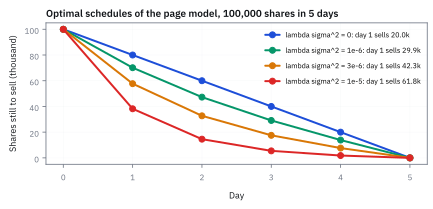
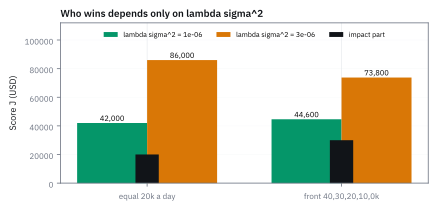
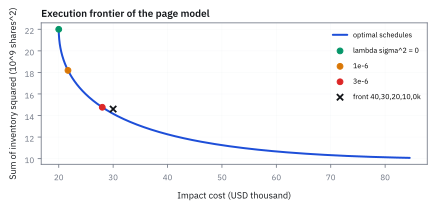
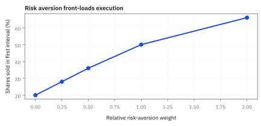

18.6 Almgren-Chriss Optimal Execution
แบ่ง order เพื่อแลก temporary impact กับความเสี่ยงที่ราคาวิ่งหนี
ต้องขายหุ้น 100,000 หุ้นให้หมดใน 5 วัน ขายวันละ 20,000 เท่ากัน หรือเร่งเป็น 40, 30, 20, 10, 0 พันหุ้น แบบไหนดีกว่า เมื่อต้นทุน impact คือ \$0.00001 ต่อหุ้นกำลังสอง และความกลัวความเสี่ยงเท่ากับ 0.000001 หรือ 0.000003?
เฉลย: ที่ 0.000001 แบบเท่ากันชนะ 42,000 ต่อ \$44,600 ที่ 0.000003 แบบเร่งชนะ 73,800 ต่อ 86,000 แต่ทั้งสองแบบยังแพ้ schedule ของ Almgren–Chriss ที่ได้ 39,885 และ \$72,299 ผู้ชนะถูกตัดสินด้วยความกลัวที่เราเขียนลงไปเอง
ศัพท์ที่ใช้ในหัวข้อนี้
- optimal execution
- การเลือก schedule และ trading rate เพื่อลดต้นทุนที่คาดหวังภายใต้ความเสี่ยงระหว่างส่ง order ใช้แปลงเป้าหมาย desk เป็นกฎส่งคำสั่งที่ตรวจ assumptions ได้
- temporary impact
- การเสียราคาในขณะที่ trade เพราะเร่ง rate หรือกิน liquidity ใช้ลงโทษ schedule ที่ concentrate order มากเกินไป
- risk aversion
- น้ำหนักที่ให้กับความไม่แน่นอนของราคาที่ยังเหลือถืออยู่ ใช้ควบคุมว่า execution จะ front-load มากเพียงใด
- implementation shortfall
- ส่วนต่างระหว่างราคาที่ตัดสินใจ trade กับ realized execution value ใช้วัดต้นทุนทั้งหมดของ execution เทียบ benchmark เดียวกัน
- variance
- ค่าเฉลี่ยของ squared deviation จากค่าเฉลี่ย ใช้วัดความไม่แน่นอนของ price change หรือ inventory P and L
- United States (US)
- ประเทศและตลาดตัวอย่างของหนังสือ ใช้กำหนด venue, currency และ trading conventions ของ case
สัญลักษณ์ที่ใช้ในหัวข้อนี้
| สัญลักษณ์ | ความหมาย | หน่วย |
|---|---|---|
| $x_t$ | shares ที่ยังต้องขายหลังเวลา $t$ | shares |
| $v_t$ | shares sold ใน interval $t$ | shares/interval |
| $\eta$ | temporary-impact coefficient | USD/share squared |
| $\lambda$ | risk-aversion parameter | chosen to make objective USD |
| $\sigma$ | price volatility per interval | USD/share |
ที่มาที่ไป: จะขายของก้อนใหญ่ให้เสร็จภายในกี่ชั่วโมง
กองทุนขนาดใหญ่เจอปัญหาที่กองทุนเล็กไม่มี คือคำสั่งของตัวเองใหญ่พอจะดันราคาเสียเอง
ถ้ารีบขายให้เสร็จ ราคาจะถูกกดจนขาดทุนจากผลกระทบของตัวเอง แต่ถ้าค่อย ๆ ขาย ก็เสี่ยงที่ราคาจะวิ่งหนีไปก่อนขายเสร็จ
Robert Almgren กับ Neil Chriss วางกรอบคิดสำหรับการชั่งสองแรงนี้ในช่วงปี 2000 โดยเขียนทั้งต้นทุนที่คาดหวังและความเสี่ยงไว้ในเป้าหมายเดียวกัน
ผลที่ได้กลายเป็นฐานของระบบส่งคำสั่งอัตโนมัติที่ใช้กันทั่วอุตสาหกรรม และเปลี่ยนการส่งคำสั่งจากงานที่ใช้สัญชาตญาณ เป็นงานที่มีคำตอบคำนวณได้
โจทย์ต้องบังคับให้ inventory จบที่ศูนย์
ให้ order ขายทั้งหมด order 100,000 shares ใน 5 daily intervals; parameter details อยู่ใน symbol table และ formulas ด้านล่าง โครงสร้างนี้เป็น discrete teaching version ของ Almgren-Chriss optimiser ไม่ได้อ่านใจตลาดได้ มันแค่อ่าน penalty ที่เรายอมเขียนลงไป
ขั้นที่ 1 — inventory accounting
เริ่มจากบัญชีง่าย ๆ ว่าเหลือของต้องขายอีกเท่าไรในแต่ละช่วงเวลา
inventory เริ่ม 100,000 shares, ลดลงตาม shares ที่ขายในแต่ละวัน และต้องเท่ากับศูนย์เมื่อครบ horizon
ขั้นที่ 2 — นิยามของเป้าหมายที่ชั่งสองแรงที่ดึงคนละทาง
บรรทัดนี้เป็น นิยาม ของสิ่งที่เราเลือกจะทำให้เล็กที่สุด ไม่ใช่ผลที่พิสูจน์ ก้อนแรกคือต้นทุนจากการดันราคาตัวเอง ซึ่งโตตามกำลังสองของความเร็วที่ขาย จึงลงโทษการขายรวดเดียวหนัก ๆ ก้อนที่สองคือความเสี่ยงจากการถือของค้างไว้ ซึ่งโตตามปริมาณที่เหลือ จึงลงโทษการขายช้า สองแรงนี้ดึงคนละทาง ตัวคูณตรงกลางคือสิ่งที่เราเลือกเอง มันบอกว่ายอมจ่ายเงินเท่าไรเพื่อลดความเสี่ยงหนึ่งหน่วย และต้องตั้งให้ทั้งสองก้อนมีหน่วยเดียวกันก่อนบวกกัน
term แรกหน่วย USD คือ temporary impact;
term หลัง penalize inventory variance ตลอด horizon โดยต้อง calibrate $\lambda$ ให้ objective มีหน่วย USD
ขั้นที่ 3 — risk-neutral benchmark
ดูกรณีสุดขั้วก่อน คือไม่กลัวความเสี่ยงเลย คำตอบคือแบ่งเท่า ๆ กันทุกช่วง ซึ่งใช้เป็นจุดเทียบสำหรับกรณีที่กลัวความเสี่ยง
เมื่อไม่ลงโทษ price risk quadratic temporary cost ถูกต่ำสุดด้วย equal slices;
ตัวเลขเป็น model cost ไม่รวม spread, fee หรือ permanent impact
พิสูจน์ว่าขายเท่ากันดีที่สุดเมื่อ $\lambda=0$: ให้ $v_i=X/5+d_i$ เพราะยอดรวมต้องเป็น $X$ จึงมี $\sum_i d_i=0$ ยกกำลังสองแล้วบวกได้ $\sum_i v_i^2=X^2/5+2(X/5)\sum_i d_i+\sum_i d_i^2=X^2/5+\sum_i d_i^2$ ก้อนสุดท้ายไม่ติดลบและเป็นศูนย์เฉพาะเมื่อทุก $d_i=0$ จึงต้องขายเท่ากันทั้งห้าวัน
ขั้นที่ 4 — ลองด้วยมือ: สอง schedule ให้คะแนนด้วยสูตรเดียวกัน
ก่อนให้ optimizer หา schedule ที่ดีที่สุด ลองให้คะแนนสอง schedule ด้วยมือ แล้วดูว่าอะไรตัดสินผู้ชนะ
eq คือขายเท่ากันวันละ 20,000 fr คือเร่งขาย 40, 30, 20, 10, 0 พันหุ้น $I$ คือต้นทุน impact $S$ คือผลรวมกำลังสองของหุ้นที่ยังถืออยู่ต้นแต่ละวัน และ $J^*$ คือคะแนนของ schedule ที่ดีที่สุดจากขั้นที่ 6 ตัวห้อย 1 คือ $\lambda\sigma^2=10^{-6}$ และ 3 คือ $3\times10^{-6}$
schedule แบ่งเท่ากันจ่าย impact 20,000 แต่ถือของค้างไว้นาน (ผลรวมกำลังสองของ inventory 22,000 ล้าน) schedule เร่งขายวันแรกจ่าย impact 30,000 (เพราะกำลังสองลงโทษวันที่ขาย 40,000) แต่ของค้างน้อยกว่า (14,600 ล้าน)
ใครชนะขึ้นกับ $\lambda\sigma^2$ ล้วน ๆ: ที่ $10^{-6}$ ต่อหุ้นกำลังสอง แบบเท่ากันชนะ 42,000 ต่อ 44,600 ที่ $3\times10^{-6}$ แบบเร่งชนะ 73,800 ต่อ 86,000 ไม่มีอะไรในตลาดเปลี่ยน มีแค่ว่าเรากลัวราคาวิ่งหนีแค่ไหน
optimizer ทำสิ่งนี้กับทุก schedule ที่เป็นไปได้แล้วเลือกตัวที่ $J$ ต่ำสุด ที่ $10^{-6}$ มันขายวันแรก 29,880 หุ้นได้ 39,885 ที่ $3\times10^{-6}$ ขายวันแรก 42,300 หุ้นได้ 72,299 ดีกว่าทั้งสองแบบที่ลองด้วยมือ คำตอบจึงเลื่อนจากแบ่งเท่ากันไปทางเร่งขาย เมื่อ $\lambda$ โต นี่คือทั้งหมดของ Almgren–Chriss ในสองบรรทัดคะแนน
ขั้นที่ 5 — การพิสูจน์ Revenue Capture: ที่มาของ Expected Cost และ Variance ของ Inventory
การกระจายสมการ revenue capture แสดงให้เห็นว่า permanent impact และ temporary impact ทำหน้าที่ดูดซับมูลค่าออกจากพอร์ต ในขณะที่ความผันผวนของราคาจะถูกขยายตามจำนวนหุ้นคงค้าง $x_k$
$R$ คือเงินที่ได้จากการขายทั้งหมด และ $C(n)$ คือส่วนที่คาดว่าจะหายไปจากมูลค่าเริ่มต้น $S_1X$ สไลด์เขียนผลกระทบถาวรเป็น $g(n)$ และชั่วคราวเป็น $h(n)$ ที่นี่ใช้รูปเส้นตรง $g(n)=\gamma n$ และ $h(n)=\eta n$
เงินรวมที่ได้จากการทยอยขายหุ้นหรือ revenue capture มาจากผลคูณของราคาที่ได้รับจริงในแต่ละงวด $\hat{S}_k$ กับจำนวนหุ้นที่ขายออกไป $n_k$
เมื่อแทนสมการพลวัตราคาลงไป ราคาในแต่ละงวดจะถูกกดลงอย่างถาวรจากยอดขายสะสมในอดีต และถูกกดลงชั่วคราวจากแรงขายของงวดนั้นเอง บวกกับการสุ่มของราคาในตลาด
จุดเปลี่ยนรูปสำคัญคือการสลับลำดับผลรวมของสัญญาณสุ่ม $z_j$ แรงกระแทก $z_j$ ของงวดที่ $j$ กระทบทุกหุ้นที่ขายหลังจากนั้น และหุ้นที่ขายหลังงวด $j$ รวมกันก็คือหุ้นคงเหลือ $x_j$ พอดี เทอมของ $\gamma$ สลับแบบเดียวกัน
ดังนั้น expected cost หรือเงินที่หายไปจากราคาตั้งต้น $S_1 X$ จึงมาจากผลกระทบถาวรและชั่วคราวรวมกัน ส่วนความเสี่ยงที่รายรับจะแกว่งตัวก็คือ variance ของหุ้นที่ค้างพอร์ตในแต่ละงวด
ขั้นที่ 6 — Euler-Lagrange Difference Equation และ Closed-Form Trajectory แบบ Sinh
ผลเฉลยแบบปิดด้วย hyperbolic sine เผยให้เห็นกลยุทธ์ front-loading: ยิ่งผู้ลงทุนมี risk aversion สูง เส้นทางจะยิ่งเทขายก้อนโตในช่วงต้นเพื่อลด inventory risk อย่างรวดเร็ว
การหาทางเดินของคำสั่งเทรดที่สมดุลที่สุด ทำได้โดยหา derivative ของ objective เทียบกับจำนวนหุ้นคงค้าง $x_k$ ในแต่ละจุดเวลา
จับ derivative เท่ากับศูนย์แล้วหารด้วย $2\eta$ จะได้สมการผลต่างอันดับสอง ย้ายข้างเป็น $x_{k+1}-2x_k+x_{k-1}=\kappa^2x_k$ ซึ่งระบุว่าความโค้งของจำนวนหุ้นในพอร์ตแปรผันตรงกับหุ้นที่เหลืออยู่ ด้วยอัตราส่วน $\kappa^2$
เมื่อมองในเวลาต่อเนื่อง สมการนี้แปลงเป็น differential equation ที่มีผลเฉลยเป็น hyperbolic sine function สอดคล้องกับเงื่อนไขเริ่มต้น $x(0)=X$ และต้องขายหมดเกลี้ยง $x(T)=0$
หากผู้ลงทุนไม่กลัวความเสี่ยงราคาเลยหรือ $\lambda \to 0$ ตัวคูณ $\kappa$ จะเข้าใกล้ศูนย์ และเส้นทางจะยุบตัวลงเป็นเส้นตรงพอดี นั่นคือการแบ่งขายเท่ากันทุกงวดแบบคงที่
ขั้นที่ 7 — ไฟล์ Excel ของคอร์ส: ขาย 1,000 หุ้นใน 10 ช่วงด้วย impact ของ Kissel-Glantz
สไลด์ให้ผลกระทบถาวรเป็นเส้นตรง และผลกระทบชั่วคราวเป็นแบบ Kissel-Glantz ของหัวข้อ 18.5 แล้วแก้ในไฟล์ Excel หุ้นตัวที่ 1 ของไฟล์ ผันผวน 5.1449% ปริมาณซื้อขาย 10 ขาย 1,000 หุ้นใน 10 ช่วง น้ำหนักความเสี่ยงเท่ากับ 1
$h_k$ คือต้นทุนชั่วคราวของช่วงที่ $k$ ซึ่งโตเร็วกว่าเส้นตรงเพราะกำลัง 1.65 $g_k$ คือต้นทุนถาวรที่กดราคาของหุ้นที่ยังเหลือ และ $\sigma^2x_k^2$ คือความเสี่ยงของหุ้นที่ถือค้าง ไฟล์รวมทั้งสามก้อนทุกช่วงแล้วให้ solver หาจำนวนขาย
คำตอบเทขาย 85% ในช่วงแรก เพราะในไฟล์นี้ความเสี่ยงของการถือค้างหนักกว่าต้นทุนการขายเร็วมาก แบ่งเท่ากันช่วงละ 100 หุ้นต้นทุนการขายต่ำกว่า แต่ความเสี่ยงรวม 7,544 ทำให้คะแนนรวม 8,323 แย่กว่าหกเท่า เราแก้ซ้ำเองด้วยจุดเริ่ม 20 จุด ได้ 1,319.71 และช่วงแรก 850 หุ้นเท่ากัน ไฟล์จึงหาคำตอบได้ถูก
สไลด์บอกด้วยว่าจำนวนช่วง $T$ เองก็เป็นตัวแปรที่เลือกได้ และรูป Kissel-Glantz ในสไลด์คูณความผันผวนในก้อน impact ด้วย ไฟล์ใช้รูปที่ไม่มีความผันผวนในก้อนนั้น เหมือนหัวข้อ 18.5
ย้ายทั้งพอร์ต: คำสั่งของหุ้นตัวหนึ่งกระทบหุ้นอีกตัว
สไลด์ขยายโจทย์จากหุ้นตัวเดียวเป็นการย้ายพอร์ตจาก $x$ ไป $y$ ภายใน $T$ ครั้ง ประเด็นที่ต้องคิดเพิ่มคือ จำนวนครั้งเป็นตัวแปร ผลกระทบข้ามหุ้น การเลือกระหว่าง market order กับ limit order การใช้ dark pool และการรักษาพอร์ตให้สมดุลระหว่างทาง เช่นขายฝั่ง long ไปพร้อมกับปิด short เพื่อไม่ให้พอร์ตที่ทำไปครึ่งเดียวกลายเป็นการเดิมพันด้านเดียว สไลด์ยอมรับว่าเรื่องนี้ยังเป็นงานวิจัยที่ยังเข้าใจไม่ครบ และการเทรดความถี่สูงก็เจอโจทย์เดียวกัน คือจะวาง limit order ตรงไหนและคุมความเสี่ยงของ inventory อย่างไร
ผลกระทบข้ามหุ้นเกิดได้แม้หุ้นสองตัวไม่เกี่ยวกัน กลไกที่สไลด์ยกมาสามข้อ คือผู้ดูแลสภาพคล่องเรียนรู้มูลค่าของหุ้นตัวหนึ่งจาก order flow ของหุ้นที่เกี่ยวข้อง นักเก็งกำไรเทรดหลายหุ้นพร้อมกันเพื่อลดต้นทุน คุมความเสี่ยง และซ่อนผลกระทบโดยตรง และผู้ดูแลสภาพคล่องก็ตั้งราคาโดยคิดเผื่อกลยุทธ์นั้นไว้แล้ว
ลักษณะที่พบคือ ผลกระทบข้ามหุ้นมักติดลบ ทั้งผลกระทบตรงและข้ามจะเล็กลงเมื่อมีนักเก็งกำไรมาก จะใหญ่ขึ้นเมื่อความเห็นในตลาดกระจายมาก และใหญ่ขึ้นระหว่างหุ้นที่มีผู้ดูแลคนเดียวกัน ผลที่ตามมาคือสมมติฐานของหัวข้อ 18.5 ที่ให้ต้นทุนรวมเท่ากับผลบวกของต้นทุนรายหุ้น ละเลยก้อนนี้ไปทั้งก้อน
ที่มาที่ไป: วิกฤต LTCM และการกำเนิดของแบบจำลอง Almgren-Chriss ในปี 2000
ในช่วงปลายทศวรรษ 1990 กองทุนเก็งกำไรยักษ์ใหญ่อย่าง Long-Term Capital Management (LTCM) ประสบวิกฤตสภาพคล่องอย่างรุนแรง เมื่อพอร์ตขนาดมหึมาจำเป็นต้องถูกเทขายในเวลาจำกัด แต่ตลาดไม่สามารถรองรับแรงขายมหาศาลได้ ส่งผลให้ราคาพังทลายและเกิดการขาดทุนจาก slippage อย่างมหาศาล
ก่อนหน้านั้น ผู้จัดการกองทุนมักใช้กฎเกณฑ์ง่าย ๆ อย่างการแบ่งคำสั่งเท่ากันตามเวลา (equal time slicing) โดยไม่ได้คำนึงว่าการถือครองหุ้นที่เหลือนานเกินไป จะเปิดรับความเสี่ยงต่อความผันผวนของตลาดภายนอกมากเพียงใด
ในปี ค.ศ. 2000 Robert Almgren และ Neil Chriss จึงได้ตีพิมพ์ผลงานประวัติศาสตร์ที่นำหลักการ mean-variance ของ Markowitz มาประยุกต์เข้ากับการส่งคำสั่งซื้อขาย เกิดเป็น execution frontier ที่แสดงการแลกหมัดอย่างแม่นยำระหว่างต้นทุน market impact และความเสี่ยงของ inventory
แล้วเอาไปใช้ทำอะไรได้จริงบ้าง
การแบ่งคำสั่งใหญ่ให้ทยอยส่ง เป็นงานที่ทุกกองทุนขนาดใหญ่ต้องทำทุกวัน
ใช้ตัดสินว่าจะขายของก้อนใหญ่ให้เสร็จภายในกี่ชั่วโมง โดยชั่งระหว่างต้นทุนกับความเสี่ยงราคาวิ่งหนี
ใช้ตั้งค่าระบบส่งคำสั่งอัตโนมัติ ซึ่งเป็นมาตรฐานของอุตสาหกรรม
ใช้ประเมินคุณภาพการส่งคำสั่งย้อนหลัง โดยเทียบกับต้นทุนที่ควรจะเป็น
Figure 18.6a — schedule ที่ดีที่สุดของแบบจำลองในหน้านี้

แก้สมการของขั้นที่ 6 ตรง ๆ สำหรับหุ้น 100,000 หุ้นใน 5 วัน เมื่อไม่กลัวความเสี่ยง ขายวันละ 20,000 เท่ากัน ยิ่งกลัวมาก วันแรกยิ่งขายมาก คือ 29,900, 42,300 และ 61,800 หุ้นที่ความกลัว 0.000001, 0.000003 และ 0.00001
Figure 18.6b — ผู้ชนะขึ้นกับความกลัวความเสี่ยงล้วน ๆ

สอง schedule ของขั้นที่ 4 แท่งดำคือส่วนของต้นทุน impact คือ 20,000 และ 30,000 ที่ความกลัว 0.000001 แบบเท่ากันชนะ 42,000 ต่อ 44,600 ที่ 0.000003 แบบเร่งชนะ 73,800 ต่อ 86,000 ตลาดไม่ได้เปลี่ยนอะไรเลย
Figure 18.6c — execution frontier ของแบบจำลองในหน้านี้

แต่ละจุดบนเส้นคือ schedule ที่ดีที่สุดของความกลัวค่าหนึ่ง แกนนอนคือต้นทุน impact แกนตั้งคือผลรวมกำลังสองของหุ้นที่ถือค้าง schedule เร่งขาย 40, 30, 20, 10, 0 พันหุ้น (กากบาท) อยู่ขวาของเส้น แปลว่ามี schedule ที่ความเสี่ยงเท่ากันแต่ต้นทุนต่ำกว่า
Figure 18.6d — schedule จริงจากไฟล์ Excel ของคอร์ส

ขาย 1,000 หุ้นใน 10 ช่วงด้วย impact ของ Kissel-Glantz ช่วงแรกขาย 849.84 หุ้น ช่วงที่สอง 104.60 แล้วเหลือแค่เศษ คะแนนรวม 1,319.77 เทียบกับแบ่งเท่ากันที่ได้ 8,322.82
คำตอบ — ขายเท่ากัน หรือเร่งขาย
คำถาม: ต้องขายหุ้น 100,000 หุ้นให้หมดใน 5 วัน ขายวันละ 20,000 เท่ากัน หรือเร่งเป็น 40, 30, 20, 10, 0 พันหุ้น แบบไหนดีกว่า เมื่อต้นทุน impact คือ \$0.00001 ต่อหุ้นกำลังสอง และความกลัวความเสี่ยงเท่ากับ 0.000001 หรือ 0.000003?
ของที่มี: ขั้นที่ 2 ถึง 6
1 ต้นทุน impact แบบเท่ากัน 20,000 แบบเร่ง \$30,000
2 ผลรวมกำลังสองของหุ้นที่ถือค้าง แบบเท่ากัน 22,000 ล้าน แบบเร่ง 14,600 ล้าน
3 ที่ความกลัว 0.000001 แบบเท่ากันชนะ 42,000 ต่อ 44,600 ที่ 0.000003 แบบเร่งชนะ 73,800 ต่อ 86,000
4. schedule ที่ดีที่สุดขายวันแรก 29,880 หุ้นได้ 39,885 และ 42,300 หุ้นได้ 72,299 ดีกว่าทั้งสองแบบ
ตรวจเองใน 10 วินาที: 20,000 + 22,000 = 42,000 และ 30,000 + 3(14,600) = 73,800
แปลว่าอะไร: ผู้ชนะถูกตัดสินด้วยความกลัวที่เราเขียนลงไป ไม่ใช่ด้วยตลาด desk จึงต้องตั้งค่านี้อย่างรู้ตัว บันทึกไว้ และใส่ข้อจำกัดที่ห้ามละเมิดก่อนให้ optimizer ทำงาน ตามตัวอย่างที่สอง
ตัวอย่างที่สอง — schedule สวย แต่ส่งคำสั่งได้จริงไหม
คำถาม: optimizer เสนอจำนวนขายที่คะแนนต่ำสุด แต่ desk ห้ามคำสั่งเกิน 15% ของปริมาณซื้อขายแต่ละวัน ควรรับ schedule ทันทีไหม?
ของที่มี: ขั้นที่ 1 และ 4
1 คูณปริมาณซื้อขายของแต่ละวันด้วย 0.15 ได้เพดานของวันนั้น
2 เทียบจำนวนขายของแต่ละวันกับเพดาน ถ้าเกินแม้วันเดียว schedule นี้ใช้ไม่ได้ ไม่ว่าคะแนนจะต่ำแค่ไหน
ตรวจเองใน 10 วินาที: วันที่ซื้อขาย 200,000 หุ้น ส่งได้ไม่เกิน 30,000 หุ้น schedule ที่ขายวันแรก 42,300 หุ้นจึงผ่านไม่ได้ถ้าวันนั้นซื้อขายเพียง 200,000
แปลว่าอะไร: ใส่ช่วงประมูล ช่วงห้ามเทรด และข้อจำกัดการยืมหุ้นเข้าไปก่อน optimize เสมอ คำตอบที่สวยแต่ส่งคำสั่งไม่ได้คือคำตอบของโจทย์ผิดข้อ
โค้ดตรวจสอง schedule, schedule ที่ดีที่สุด และไฟล์ Excel ของคอร์ส
import numpy as np
eta, X, T = 1e-5, 100_000, 5
eq, fr = np.full(5, 20_000.0), np.array([40_000, 30_000, 20_000, 10_000, 0.0])
held = lambda v: X - np.concatenate([[0], np.cumsum(v)[:-1]]) # shares held at the start of each day
J = lambda v, c: eta * np.sum(v**2) + c * np.sum(held(v)**2)
assert abs(J(eq, 1e-6) - 42_000) < 1e-6 and abs(J(fr, 1e-6) - 44_600) < 1e-6
assert abs(J(eq, 3e-6) - 86_000) < 1e-6 and abs(J(fr, 3e-6) - 73_800) < 1e-6
def best(c): # first-order conditions of step 6
A = np.diag([2 * eta + c] * 4) - eta * (np.eye(4, k=1) + np.eye(4, k=-1))
x = np.linalg.solve(A, np.array([eta * X, 0, 0, 0]))
return -np.diff(np.concatenate([[X], x, [0]]))
for c, day1, Jstar in ((1e-6, 29_880, 39_885), (3e-6, 42_300, 72_299)):
v = best(c)
assert abs(v[0] - day1) < 10 and abs(J(v, c) - Jstar) < 1 and abs(v.sum() - X) < 1e-6
sig, g, rho = 0.0514490, 0.001, 1.0 # the course spreadsheet
a, d, b = 0.3 * sig + 0.0015, 0.0035 * (100 / 10)**0.65, 0.65
n = np.array([849.8424, 104.6009, 29.9362, 7.4082, 3.5549, 1.5721, 0.7746, 0.9429, 0.6981, 0.6696])
x = 1_000 - np.cumsum(n)
temp, perm, risk = np.sum(a * n + d * n**(1 + b)), np.sum(g * n * x), np.sum(sig**2 * x**2)
assert abs(temp - 1_120.73) < 0.01 and abs(perm - 132.93) < 0.01 and abs(risk - 66.10) < 0.01
assert abs(temp + perm + rho * risk - 1_319.77) < 0.01
m = np.full(10, 100.0); xm = 1_000 - np.cumsum(m)
assert abs(np.sum(a * m + d * m**(1 + b)) + np.sum(g * m * xm) + np.sum(sig**2 * xm**2) - 8_322.82) < 0.01
kap, t = 1e-6, np.linspace(0, 5, 6) # sinh path tends to a straight line
assert np.allclose(np.sinh(kap * (5 - t)) / np.sinh(kap * 5), (5 - t) / 5, atol=1e-9)โค้ดตรวจคะแนนของสอง schedule ที่ความกลัวสองระดับ แก้สมการของขั้นที่ 6 หา schedule ที่ดีที่สุดได้ 39,885 และ 72,299 ตรวจต้นทุนทั้งสามก้อนของไฟล์ Excel รวม 1,319.77 เทียบแบ่งเท่ากัน 8,322.82 และตรวจว่าเส้น sinh กลายเป็นเส้นตรงเมื่อไม่กลัวความเสี่ยง
กับดัก: ใช้ model cost เป็น promise ของ fill
Almgren-Chriss สมมติ parameter คงที่และ price dynamics เรียบพอให้ variance penalty แทนความเสี่ยงได้ ข่าว, halt, adverse selection และ volume surprise ทำให้ schedule ต้องมี monitoring และ override rules Model ให้ baseline; trader ยังต้องดู market state
ข้อจำกัด: วิธีนี้สมมติอะไร และของจริงเป็นอย่างไร
| เรื่อง | วิธีนี้สมมติว่า | ของจริงเป็นอย่างไร | ผลที่ตามมาเวลาใช้งาน |
|---|---|---|---|
| รูปของผลกระทบ | ผลกระทบเป็นเส้นตรงต่อความเร็ว | จริงเป็นการประมาณ | แผนที่ได้ไวต่อค่าที่ประมาณ และค่านั้นวัดยาก |
| ราคาเดินสุ่ม | ราคาไม่มีทิศทาง | ถ้ามีข่าวออกระหว่างส่งคำสั่ง ทิศทางมีจริง | แผนที่วางไว้กลายเป็นแผนที่แย่ทันทีเมื่อมีข่าว |
| ตลาดไม่รู้ตัว | คนอื่นไม่รู้ว่าเรากำลังขาย | ระบบอื่นตรวจจับรูปแบบการส่งได้ | ต้องสุ่มจังหวะและขนาดเพื่อไม่ให้ถูกจับทาง ซึ่งเพิ่มต้นทุนอีกทาง |
แถวล่างเป็นเหตุผลที่ระบบจริงไม่เดินตามแผนที่คำนวณได้เป๊ะ ๆ แต่ใส่ความสุ่มเข้าไปด้วย
สรุปที่ใช้ได้จริง
- optimal execution คือการแลก impact cost กับความเสี่ยงของ remaining inventory
- quadratic temporary impact ให้ equal slicing เป็น benchmark เมื่อ $\lambda=0$
- hard trading constraints และ parameter uncertainty ต้องอยู่ใน pre-trade process